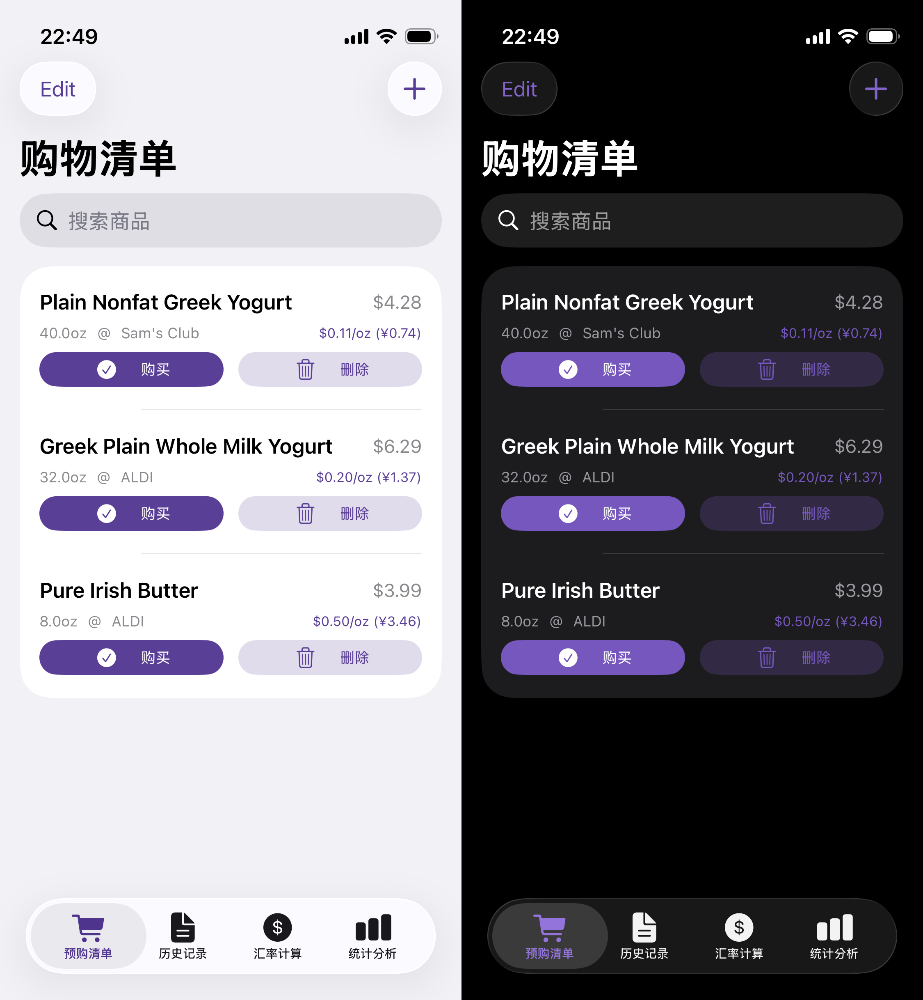

SMmasterShopping Manage Master for iOS |

SMmaster is a native SwiftUI shopping management app for iPhone. It combines a shopping list, purchase history, exchange calculator, and spending statistics into a local-first mobile tool.
The app was built to make shopping decisions easier when comparing USD and RMB prices. It keeps item planning, purchase records, exchange conversion, and store-level spending review in one place.
The shopping list supports adding, editing, deleting, budgeting, currency switching, and one-click purchase actions that move items into history. The history view records purchase details and supports store and date filtering.
The app also includes batch USD/CNY conversion, spending summaries, store breakdowns, trend charts, local data persistence, JSON import/export, and customizable store lists.
SMmaster is written in Swift with SwiftUI and organized around local data models, a data store, and dedicated views for shopping, history, exchange calculation, statistics, and settings. The project uses XcodeGen for project generation and can be packaged as an unsigned IPA.